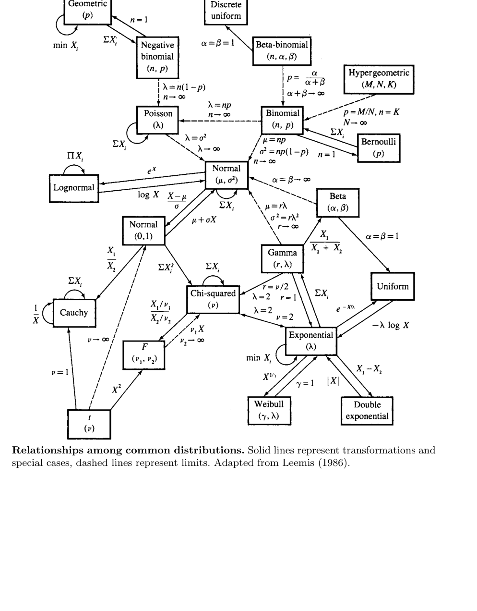

13 Appendix
- 이 부록은 두 부분으로 구성된다.
- Computer Algebra: Mathematica 같은 컴퓨터 대수 시스템을 이용해 통계 계산을 보조하는 방법
- Table of Common Distributions: 본문에서 자주 사용한 확률분포들의 pmf/pdf, 평균, 분산, mgf, 관계 요약
- 컴퓨터 대수 시스템은 통계학을 이해하는 데 반드시 필요한 도구는 아니다.
- 그러나 반복적이고 지루한 계산, 복잡한 미분·적분, 합, 시뮬레이션, 변수변환 계산을 빠르게 확인하는 데 매우 유용하다.
- 특히 다음 상황에서 도움이 된다.
- 복잡한 비율의 2차 미분 계산
- 변수변환의 야코비안 계산
- 다중적분 계산
- mgf의 도함수 계산
- 극한분포 확인
- closed form이 있는지 탐색
- 계산 결과를 수치적으로 검산
- 이 부록의 예시는 Mathematica를 기준으로 되어 있다.
- Maple 등 다른 컴퓨터 대수 시스템으로도 비슷한 계산을 할 수 있다.
- 목적은 특정 소프트웨어 문법을 완전히 가르치는 것이 아니라, 통계 계산에서 컴퓨터 대수 시스템을 어떻게 활용할 수 있는지 보여주는 것이다.
13.1 A.1: 무순서 표본추출 계산
13.1.1 예제: 복원추출에서 무순서 결과 열거
- Chapter 1의 Example 1.2.20에서는 집합
\[ \{2,4,9,12\} \]
에서 복원추출할 때 가능한 무순서 결과를 열거한다. - 표본의 순서를 고려하지 않으면 각 표본은 네 숫자가 각각 몇 번 나왔는지로 표현된다. - 예를 들어 크기 \(n\)의 표본에서 네 원소의 등장 횟수를
\[ (w_1,w_2,w_3,w_4) \]
라고 쓰면
\[ w_1+w_2+w_3+w_4=n \]
을 만족해야 한다.
13.1.2 조합 수
- \(m\)개의 범주에서 \(n\)개를 복원추출하고 순서를 무시하면 가능한 구성 수는
\[ \binom{n+m-1}{n} \]
이다. - 여기서는 \(n=4\), \(m=4\)이므로
\[ \binom{7}{4}=35 \]
개의 무순서 결과가 있다.
13.1.3 Mathematica 코드의 구조
- 먼저 Combinatorica 패키지를 불러온다.
Needs["DiscreteMath`Combinatorica`"]- 관측 가능한 값들의 집합을 정의한다.
x = {2, 4, 9, 12};
n = Length[x];
ncomp = NumberOfCompositions[n, n]- 출력값은
35이다.
13.1.4 표본 구성, 평균, 가중치
- 가능한 구성을 모두 열거한다.
w = Compositions[n, n];- 각 구성의 multinomial weight는
\[ \frac{n!}{w_1!w_2!\cdots w_m!}\frac{1}{m^n} \]
이다.
- 코드로는 다음과 같다.
wt = n!/(Apply[Times, Factorial /@ w, 1]*n^n);
avg = w . x/n;
Sort[Transpose[{avg, wt}]]13.1.5 결과 해석
- 출력은 각 표본평균 값과 그 확률가중치를 정렬하여 보여준다.
- 예를 들어 평균이 같은 서로 다른 구성이 있을 수 있다.
- 부록의 설명처럼 평균값 8을 갖는 결과가 두 개 있으며, 히스토그램을 만들려면 이 두 가중치를 합쳐야 한다.
\[ \left\{8,\frac{3}{128}\right\}, \qquad \left\{8,\frac{3}{64}\right\} \]
- 따라서 평균 8의 전체 가중치는
\[ \frac{3}{128}+\frac{3}{64} = \frac{9}{128}. \]
13.1.6 학습 포인트
- 순서 있는 표본공간은 \(4^4=256\)개이다.
- 무순서 구성은 35개뿐이지만 각 구성의 확률은 동일하지 않다.
- 무순서 표본을 사용할 때는 multinomial coefficient가 반드시 필요하다.
- 컴퓨터 대수 시스템은 가능한 구성을 빠짐없이 열거하고 확률가중치를 자동 계산하는 데 유용하다.
13.2 A.2: 일변량 변수변환
13.2.1 예제: 변수변환 계산
- Exercise 2.1(a)는 표준적인 일변량 변수변환 문제이다.
- 밀도함수가
\[ f(x)=42x^5(1-x) \]
이고 변환이
\[ Y=X^3 \]
라고 하자.
13.2.2 역변환
- \(y=x^3\)을 \(x\)에 대해 풀면
\[ x=y^{1/3} \]
이다. - Mathematica에서는 다음처럼 계산한다.
f[x_] := 42*(x^5)*(1 - x)
sol = Solve[y == x^3, x]- 복소근까지 모두 출력될 수 있지만, 확률변수 \(X\)가 \(0<x<1\)에 있으면 실제로 사용할 근은
\[ x=y^{1/3} \]
이다.
13.2.3 야코비안
- 일변량 변수변환에서 필요한 항은
\[ \left|\frac{dx}{dy}\right| \]
이다. - 여기서는
\[ \frac{dx}{dy} = \frac{1}{3y^{2/3}}. \]
- Mathematica 계산은 다음과 같다.
D[x /. sol[[1]], y]13.2.4 변환된 밀도
- 변수변환 공식은
\[ f_Y(y)=f_X(x(y)) \left|\frac{dx}{dy}\right|. \]
- 따라서
\[ f_Y(y) = 42(y^{1/3})^5(1-y^{1/3}) \frac{1}{3y^{2/3}} \]
이다.
- 정리하면
\[ f_Y(y) = 14y(1-y^{1/3}), \qquad 0<y<1. \]
- Mathematica 출력도
14(1 - y^(1/3))y와 같은 형태가 된다.
13.2.5 학습 포인트
- 컴퓨터 대수 시스템은 역변환과 도함수 계산을 빠르게 해준다.
- 그러나 어떤 근이 실제 확률변수의 지지집합에 해당하는지는 사람이 판단해야 한다.
- 복소근이나 지지집합 밖의 해를 그대로 사용하면 잘못된 밀도를 얻을 수 있다.
13.3 A.3: 이변량 변수변환
13.3.1 예제: 정규변수의 합과 베타변수의 곱
- 이 예제는 이변량 변수변환을 Mathematica로 계산하는 방법을 보여준다.
- 핵심 단계는 다음과 같다.
- 원래 결합밀도 정의
- 변환식 설정
- 역변환 계산
- 야코비안 행렬식 계산
- 주변화 적분
13.3.2 정규변수의 합과 차
- \(X,Y\)가 서로 독립인 표준정규라고 하자.
\[ f(x,y)=\frac{1}{2\pi}e^{-x^2/2}e^{-y^2/2}. \]
- 변환은
\[ U=X+Y, \qquad V=X-Y. \]
- Mathematica 코드는 다음 구조이다.
f[x_, y_] := (1/(2*Pi))*E^(-x^2/2)*E^(-y^2/2)
So := Solve[{u == x + y, v == x - y}, {x, y}]
g := f[x /. So, y /. So]*
Abs[Det[Outer[D, First[{x, y} /. So], {u, v}]]]
Simplify[g]13.3.3 결합밀도 결과
- 역변환은
\[ x=\frac{u+v}{2}, \qquad y=\frac{u-v}{2}. \]
- 야코비안의 절댓값은
\[ \left|J\right|=\frac12. \]
- 결과 결합밀도는
\[ g(u,v) = \frac{1}{4\pi} \exp\left(-\frac{u^2}{4}-\frac{v^2}{4}\right). \]
- 이는 다음 곱으로 분해된다.
\[ g(u,v) = \left[ \frac{1}{\sqrt{4\pi}}e^{-u^2/4} \right] \left[ \frac{1}{\sqrt{4\pi}}e^{-v^2/4} \right]. \]
- 따라서
\[ U\sim N(0,2), \qquad V\sim N(0,2), \]
이고 \(U,V\)는 독립이다.
13.3.4 주변밀도 계산 주의
- 부록의 코드는 \(v\)를 \(0\)부터 \(\infty\)까지 적분하는 형태를 보여준다.
- 전체 주변밀도를 얻으려면 보통 \(v\)의 전체 지지집합을 확인해야 한다.
- 이처럼 컴퓨터 대수 결과는 항상 지지집합과 함께 해석해야 한다.
13.3.5 베타변수의 곱
- 다음 두 확률변수가 독립이라고 하자.
\[ X\sim Beta(a,b), \qquad Y\sim Beta(a+b,c). \]
- 변환은
\[ U=XY, \qquad V=X. \]
- 역변환은
\[ x=v, \qquad y=\frac{u}{v}. \]
- 야코비안 절댓값은
\[ \left|J\right|=\frac1{|v|}. \]
- Mathematica는 beta density를 불러와 결합밀도를 만든 뒤, 변환공식과 적분을 적용한다.
Needs["Statistics`ContinuousDistributions`"]
Clear[f, g, u, v, x, y, a, b, c]
f[x_, y_] := PDF[BetaDistribution[a, b], x]*
PDF[BetaDistribution[a + b, c], y]
So := Solve[{u == x*y, v == x}, {x, y}]
g[u_, v_] = f[x /. So, y /. So]*
Abs[Det[Outer[D, First[{x, y} /. So], {u, v}]]]
Integrate[g[u, v], {v, 0, 1}]13.3.6 결과의 의미
- 이 계산은 Chapter 4의 결과, 즉 특정 독립 베타변수의 곱이 다시 베타분포와 연결되는 성질을 확인한다.
- 단, Mathematica는 조건문
If(...)형태로 매우 복잡한 출력을 줄 수 있다. - 중요한 것은 적분 조건이 만족되는 범위에서 결과가 beta density로 정리된다는 점이다.
- 이 예는 컴퓨터 대수가 계산을 대신해 주더라도, 최종 결과의 통계적 의미와 조건은 사용자가 해석해야 함을 보여준다.
13.4 A.4: 정규확률 계산
13.4.1 예제: 원 안의 표준정규확률
- Exercise 4.14(a)의 계산은 다음 확률을 구하는 문제로 볼 수 있다.
- \(X,Y\)가 독립 표준정규일 때
\[ P(X^2+Y^2\le1) \]
을 계산한다.
13.4.2 직접 이중적분
- 결합밀도는
\[ f(x,y)=\frac1{2\pi} \exp\left(-\frac{x^2}{2}-\frac{y^2}{2}\right). \]
- 원 \(x^2+y^2\le1\) 안에서 적분하면 된다.
- \(x\)를 \(-1\)부터 \(1\)까지 두면
\[ -\sqrt{1-x^2}\le y\le \sqrt{1-x^2}. \]
- Mathematica 코드는 다음과 같다.
Needs["Statistics`ContinuousDistributions`"]
Clear[f, g, x, y]
f[x_, y_] = PDF[NormalDistribution[0, 1], x]*
PDF[NormalDistribution[0, 1], y]
g[x_] = Sqrt[1 - x^2]
Integrate[f[x, y], {x, -1, 1}, {y, -g[x], g[x]}]
N[%]13.4.3 Erf 함수
- 직접 적분하면 Mathematica는 closed form 대신 erf 함수를 포함한 표현을 줄 수 있다.
- erf 함수는 다음과 같이 정의된다.
\[ \operatorname{erf}(z) = \frac{2}{\sqrt\pi} \int_0^z e^{-t^2}\,dt. \]
- 수치값은
\[ 0.393469 \]
이다.
13.4.4 카이제곱분포를 이용한 계산
- 더 간단한 방법은
\[ X^2+Y^2\sim\chi^2_2 \]
임을 이용하는 것이다. - 따라서
\[ P(X^2+Y^2\le1) = P(\chi^2_2\le1). \]
- \(\chi^2_2\)는 평균 2인 지수분포와 같으므로
\[ P(\chi^2_2\le1) = 1-e^{-1/2}. \]
- 부록의 출력은
\[ \frac12(2-2/\sqrt e) = 1-e^{-1/2} \]
이다.
13.4.5 학습 포인트
- 직접 적분은 가능하지만 복잡한 특수함수를 낳을 수 있다.
- 분포의 구조를 이용하면 더 단순한 해석과 closed form을 얻을 수 있다.
- 컴퓨터 대수 시스템은 답을 주지만, 통계적 지식은 더 좋은 계산 경로를 선택하게 해준다.
13.5 A.5: 합의 밀도와 mgf 계산
13.5.1 예제: 독립확률변수 합의 밀도
- 두 독립 확률변수의 합 \(Z=X+Y\)의 밀도는 convolution으로 계산한다.
\[ f_Z(z) = \int_{-\infty}^{\infty} f_X(y)f_Y(z-y)\,dy. \]
- 부록은 세 경우를 보여준다.
- normal + normal
- Cauchy + Cauchy
- Student’s \(t\) + Student’s \(t\)
13.5.2 정규분포의 합
- 표준정규밀도를
\[ f(x)=\frac1{\sqrt{2\pi}}e^{-x^2/2} \]
라고 하면
\[ f_Z(z) = \int_{-\infty}^{\infty} f(y)f(z-y)\,dy. \]
- 결과는
\[ Z\sim N(0,2) \]
이므로
\[ f_Z(z) = \frac1{\sqrt{4\pi}}e^{-z^2/4}. \]
- Mathematica 출력은 조건부 형태로 나올 수 있다.
- 이는 복소수 영역까지 고려하기 때문에
Re[z]같은 조건이 나타나는 것이다.
13.5.3 코시분포의 합
- 표준 코시밀도는
\[ f(x)=\frac1{\pi(1+x^2)}. \]
- convolution 결과가
\[ \frac{2}{\pi(4+z^2)} \]
형태로 나온다. - 이는 location 0, scale 2인 Cauchy 밀도이다.
\[ Z\sim Cauchy(0,2). \]
- Mathematica 출력에는 복소수 단위 \(I\)가 포함될 수 있다.
\[ \frac{2}{\pi(-2I+z)(2I+z)} = \frac{2}{\pi(4+z^2)}. \]
- 복소수 표현을 실수형 밀도로 정리하려면 \(I^2=-1\)을 사용한다.
13.5.4 Student’s \(t\) 합
- 자유도 5인 두 Student’s \(t\) 확률변수의 합 밀도를 계산하면 closed form이 나타난다.
\[ \frac{400\sqrt5(8400+120z^2+z^4)} {3\pi(20+z^2)^5}. \]
- 부록에서는 경험적으로 자유도 합이 짝수이면 closed form이 존재하는 경우가 있고, 그렇지 않으면 수치적분이 필요할 수 있다고 설명한다.
- 이는 컴퓨터 대수 시스템이 이론적 패턴을 발견하는 탐색 도구가 될 수 있음을 보여준다.
13.5.5 예제: 12개 균등분포 합의 네 번째 모멘트
- Exercise 5.51은 12개 독립 uniform\((0,1)\) 확률변수 합의 중심화된 네 번째 모멘트를 구하는 문제이다.
- 직접 밀도를 구하면 piecewise 형태가 복잡하다.
- mgf를 사용하면 훨씬 단순하다.
13.5.6 uniform\((0,1)\)의 mgf
- \(X\sim Uniform(0,1)\)이면
\[ M_X(t) = E(e^{tX}) = \int_0^1 e^{tx}\,dx = \frac{e^t-1}{t}. \]
- 독립합
\[ S=\sum_{i=1}^{12}X_i \]
의 mgf는
\[ M_S(t) = \left(\frac{e^t-1}{t}\right)^{12}. \]
13.5.7 중심화된 합의 네 번째 모멘트
- \(S-6\)의 mgf는
\[ M_{S-6}(t) = e^{-6t} \left(\frac{e^t-1}{t}\right)^{12}. \]
- 네 번째 모멘트는 네 번째 도함수의 \(t=0\) 값이다.
\[ E[(S-6)^4] = M_{S-6}^{(4)}(0). \]
- 단순히 \(t=0\)을 대입하면 \(0/0\) 형태가 나오므로 limit을 사용해야 한다.
g[t_] = D[Exp[-6*t]*Msum[t], {t, 4}];
Limit[g[t], t -> 0]- 결과는
\[ E[(S-6)^4]=\frac{29}{10}. \]
13.6 A.6: 감마 평균 추정의 ARE
13.6.1 예제: 감마 평균에 대한 ARE 계산
- Chapter 10의 Example 10.1.18에서 MLE와 적률추정량의 asymptotic relative efficiency를 비교했다.
- 이 부록은 그 계산을 Mathematica로 수행하는 방법을 보여준다.
13.6.2 감마분포 설정
- 평균을 \(m\), scale을 \(b\)로 두면 감마분포의 shape은
\[ \frac{m}{b} \]
이다. - 밀도는
\[ f(x\mid m,b) = \text{GammaDistribution}\left(\frac{m}{b},b\right) \]
로 설정한다.
Needs["Statistics`ContinuousDistributions`"]
Clear[m, b, x]
f[x_, m_, b_] = PDF[GammaDistribution[m/b, b], x];
loglike2[m_, b_, x_] = D[Log[f[x, m, b]], {m, 2}];13.6.3 정보량과 점근분산
- Fisher information은 보통
\[ I(m) = -E\left[ \frac{\partial^2}{\partial m^2} \log f(X\mid m,b) \right] \]
이다. - 따라서 MLE의 점근분산은
\[ \frac1{I(m)} \]
이다. - Mathematica 코드:
var[m_, b_] := 1/(-Integrate[loglike2[m, b, x]*f[x, m, b],
{x, 0, Infinity}])13.6.4 ARE 계산
- 여러 평균값에 대해 MLE 분산과 적률추정량 분산을 비교한다.
mu = {1, 2, 3, 4, 6, 8, 10};
beta = 5;
mlevar = Table[var[mu[[i]], beta], {i, 1, 7}];
momvar = Table[mu[[i]]*beta, {i, 1, 7}];
ARE = momvar/mlevar- 출력 예시는 다음과 같다.
\[ \{5.25348,\;2.91014,\;2.18173,\;1.83958,\;1.52085,\;1.37349,\;1.28987\}. \]
- 이는 평균이 커질수록 ARE가 1에 가까워지는 경향을 보여준다.
- 컴퓨터 대수 시스템은 복잡한 second derivative와 적분을 자동화하여 이론 계산과 그래프 작성을 도와준다.
13.7 A.7: 카이제곱 mgf의 극한
13.7.1 예제: 카이제곱분포의 표준화 극한
- Exercise 9.30(b)는 카이제곱분포의 표준화 극한분포를 mgf로 확인하는 문제이다.
- 먼저 \(X_n\sim\chi^2_n\)이면 mgf는
\[ M_{X_n}(t) = (1-2t)^{-n/2}, \qquad t<\frac12. \]
- 관심 있는 표준화 변수는
\[ Z_n= \frac{X_n-n}{\sqrt{2n}}. \]
- 이 변수의 mgf는
\[ M_{Z_n}(t) = E\left[ \exp\left\{ t\frac{X_n-n}{\sqrt{2n}} \right\} \right]. \]
- 정리하면
\[ M_{Z_n}(t) = \exp\left(-\frac{nt}{\sqrt{2n}}\right) M_{X_n}\left(\frac{t}{\sqrt{2n}}\right). \]
- Mathematica 코드는 다음과 같다.
M[t_] = (1 - 2*t)^(-n/2);
Limit[Exp[-n*t/Sqrt[2*n]]*M[t/Sqrt[2*n]], n -> Infinity]- 결과는
\[ e^{t^2/2} \]
이다. - 이는 표준정규분포 \(N(0,1)\)의 mgf이다. - 따라서
\[ \frac{\chi^2_n-n}{\sqrt{2n}} \Rightarrow N(0,1). \]
13.8 A.8 공통 이산분포표
13.8.1 Bernoulli\((p)\)
- pmf:
\[ P(X=x\mid p)=p^x(1-p)^{1-x}, \qquad x=0,1,\quad 0\le p\le1. \]
- 평균과 분산:
\[ EX=p, \qquad Var(X)=p(1-p). \]
- mgf:
\[ M_X(t)=(1-p)+pe^t. \]
13.8.2 Binomial\((n,p)\)
- pmf:
\[ P(X=x\mid n,p) = \binom{n}{x}p^x(1-p)^{n-x}, \qquad x=0,1,\ldots,n. \]
- 평균과 분산:
\[ EX=np, \qquad Var(X)=np(1-p). \]
- mgf:
\[ M_X(t)=\{pe^t+(1-p)\}^n. \]
- 참고:
- 이항정리와 직접 연결된다.
- 다항분포는 이항분포의 다변량 버전이다.
13.8.3 Discrete uniform
- pmf:
\[ P(X=x\mid N)=\frac1N, \qquad x=1,2,\ldots,N. \]
- 평균과 분산:
\[ EX=\frac{N+1}{2}, \qquad Var(X)=\frac{(N+1)(N-1)}{12}. \]
- mgf:
\[ M_X(t)=\frac1N\sum_{i=1}^{N}e^{it}. \]
주의: 위 표기에서 합의 인덱스는 보통 \(e^{ti}\)로 쓰는 것이 자연스럽다. 원표의 요지는 가능한 값들에 대한 지수항의 평균이다.
13.8.4 Geometric\((p)\)
- pmf:
\[ P(X=x\mid p)=p(1-p)^{x-1}, \qquad x=1,2,\ldots. \]
- 평균과 분산:
\[ EX=\frac1p, \qquad Var(X)=\frac{1-p}{p^2}. \]
- mgf:
\[ M_X(t) = \frac{pe^t}{1-(1-p)e^t}, \qquad t<-\log(1-p). \]
- 참고:
- \(Y=X-1\)은 negative binomial\((1,p)\)이다.
- 기하분포는 무기억성을 갖는다.
\[ P(X>s\mid X>t)=P(X>s-t). \]
13.8.5 Hypergeometric\((N,M,K)\)
- pmf:
\[ P(X=x\mid N,M,K) = \frac{ \binom{M}{x} \binom{N-M}{K-x} }{ \binom{N}{K} }. \]
- 가능한 범위:
\[ x=0,1,\ldots,K, \qquad M-(N-K)\le x\le M. \]
- 평균과 분산:
\[ EX=\frac{KM}{N}, \]
\[ Var(X) = \frac{KM}{N} \frac{(N-M)(N-K)}{N(N-1)}. \]
- 참고:
- \(K\)가 \(M,N\)에 비해 충분히 작으면 \(x=0,1,\ldots,K\) 범위가 자연스럽다.
13.8.6 Negative binomial\((r,p)\)
- pmf:
\[ P(X=x\mid r,p) = \binom{r+x-1}{x}p^r(1-p)^x, \qquad x=0,1,\ldots. \]
- 평균과 분산:
\[ EX=\frac{r(1-p)}p, \qquad Var(X)=\frac{r(1-p)}{p^2}. \]
- mgf:
\[ M_X(t) = \left( \frac{p}{1-(1-p)e^t} \right)^r, \qquad t<-\log(1-p). \]
- 참고:
- 다른 표기로 \(Y=X+r\)를 사용하면 \(Y\)는 \(r\)번째 성공이 나오는 시행 번호이다.
- 음이항분포는 감마-포아송 혼합으로 유도될 수 있다.
13.8.7 Poisson\((\lambda)\)
- pmf:
\[ P(X=x\mid\lambda) = \frac{e^{-\lambda}\lambda^x}{x!}, \qquad x=0,1,\ldots,\quad 0\le\lambda<\infty. \]
- 평균과 분산:
\[ EX=\lambda, \qquad Var(X)=\lambda. \]
- mgf:
\[ M_X(t)=e^{\lambda(e^t-1)}. \]
13.9 A.9 공통 연속분포표
13.9.1 Beta\((\alpha,\beta)\)
- pdf:
\[ f(x\mid\alpha,\beta) = \frac1{B(\alpha,\beta)} x^{\alpha-1}(1-x)^{\beta-1}, \qquad 0\le x\le1,\quad \alpha,\beta>0. \]
- 평균과 분산:
\[ EX=\frac{\alpha}{\alpha+\beta}, \]
\[ Var(X) = \frac{\alpha\beta} {(\alpha+\beta)^2(\alpha+\beta+1)}. \]
- mgf:
\[ M_X(t) = 1+ \sum_{k=1}^{\infty} \left[ \prod_{r=0}^{k-1} \frac{\alpha+r}{\alpha+\beta+r} \right] \frac{t^k}{k!}. \]
- 참고:
\[ B(\alpha,\beta)= \frac{\Gamma(\alpha)\Gamma(\beta)} {\Gamma(\alpha+\beta)}. \]
13.9.2 Cauchy\((\theta,\sigma)\)
- pdf:
\[ f(x\mid\theta,\sigma) = \frac1{\pi\sigma} \frac1{ 1+\left(\frac{x-\theta}{\sigma}\right)^2 }, \qquad -\infty<x<\infty. \]
- 모수 범위:
\[ -\infty<\theta<\infty, \qquad \sigma>0. \]
- 평균과 분산:
- 존재하지 않는다.
- mgf:
- 존재하지 않는다.
- 참고:
- 자유도 1인 Student’s \(t\) 분포의 특수한 경우이다.
- 독립 표준정규 \(X,Y\)에 대해 \(X/Y\)는 Cauchy이다.
13.9.3 Chi-squared\((p)\)
- pdf:
\[ f(x\mid p) = \frac1{\Gamma(p/2)2^{p/2}} x^{p/2-1}e^{-x/2}, \qquad 0\le x<\infty. \]
- 평균과 분산:
\[ EX=p, \qquad Var(X)=2p. \]
- mgf:
\[ M_X(t)= \left(\frac1{1-2t}\right)^{p/2}, \qquad t<\frac12. \]
- 참고:
- 감마분포의 특수한 경우이다.
13.9.4 Double exponential\((\mu,\sigma)\)
- pdf:
\[ f(x\mid\mu,\sigma) = \frac1{2\sigma} e^{-|x-\mu|/\sigma}, \qquad -\infty<x<\infty. \]
- 평균과 분산:
\[ EX=\mu, \qquad Var(X)=2\sigma^2. \]
- mgf:
\[ M_X(t) = \frac{e^{\mu t}}{1-(\sigma t)^2}, \qquad |t|<\frac1\sigma. \]
- 참고:
- Laplace distribution이라고도 한다.
13.9.5 Exponential\((\beta)\)
- pdf:
\[ f(x\mid\beta) = \frac1\beta e^{-x/\beta}, \qquad 0\le x<\infty,\quad \beta>0. \]
- 평균과 분산:
\[ EX=\beta, \qquad Var(X)=\beta^2. \]
- mgf:
\[ M_X(t)=\frac1{1-\beta t}, \qquad t<\frac1\beta. \]
- 참고:
- 감마분포의 특수한 경우이다.
- 무기억성을 갖는다.
- 여러 변환을 통해 Weibull, Rayleigh, Gumbel 등이 얻어진다.
13.9.6 F\((\nu_1,\nu_2)\)
- pdf:
\[ f(x\mid\nu_1,\nu_2) = \frac{ \Gamma\left(\frac{\nu_1+\nu_2}{2}\right) }{ \Gamma(\nu_1/2)\Gamma(\nu_2/2) } \left(\frac{\nu_1}{\nu_2}\right)^{\nu_1/2} \frac{x^{(\nu_1-2)/2}} { \left(1+\frac{\nu_1}{\nu_2}x\right)^{(\nu_1+\nu_2)/2} }, \quad x\ge0. \]
- 평균:
\[ EX=\frac{\nu_2}{\nu_2-2}, \qquad \nu_2>2. \]
- 분산:
\[ Var(X) = 2\left(\frac{\nu_2}{\nu_2-2}\right)^2 \frac{\nu_1+\nu_2-2}{\nu_1(\nu_2-4)}, \qquad \nu_2>4. \]
- mgf:
- 존재하지 않는다.
- moments:
\[ EX^n = \frac{ \Gamma\left(\frac{\nu_1+2n}{2}\right) \Gamma\left(\frac{\nu_2-2n}{2}\right) }{ \Gamma(\nu_1/2)\Gamma(\nu_2/2) } \left(\frac{\nu_2}{\nu_1}\right)^n, \qquad n<\frac{\nu_2}{2}. \]
- 참고:
\[ F_{\nu_1,\nu_2} = \frac{\chi^2_{\nu_1}/\nu_1}{\chi^2_{\nu_2}/\nu_2} \]
이고,
\[ F_{1,\nu}=t_\nu^2. \]
13.9.7 Gamma\((\alpha,\beta)\)
- pdf:
\[ f(x\mid\alpha,\beta) = \frac1{\Gamma(\alpha)\beta^\alpha} x^{\alpha-1}e^{-x/\beta}, \qquad x\ge0,\quad \alpha,\beta>0. \]
- 평균과 분산:
\[ EX=\alpha\beta, \qquad Var(X)=\alpha\beta^2. \]
- mgf:
\[ M_X(t) = \left(\frac1{1-\beta t}\right)^\alpha, \qquad t<\frac1\beta. \]
- 참고:
- \(\alpha=1\)이면 exponential.
- \(\alpha=p/2,\beta=2\)이면 chi-squared.
- \(Y=1/X\)는 inverted gamma와 관련된다.
- Poisson 분포와도 꼬리확률 관계가 있다.
13.9.8 Logistic\((\mu,\beta)\)
- pdf:
\[ f(x\mid\mu,\beta) = \frac1\beta \frac{ e^{-(x-\mu)/\beta} }{ [1+e^{-(x-\mu)/\beta}]^2 }, \qquad -\infty<x<\infty. \]
- 평균과 분산:
\[ EX=\mu, \qquad Var(X)=\frac{\pi^2\beta^2}{3}. \]
- mgf:
\[ M_X(t) = e^{\mu t}\Gamma(1-\beta t)\Gamma(1+\beta t), \qquad |t|<\frac1\beta. \]
- cdf:
\[ F(x\mid\mu,\beta) = \frac1{1+e^{-(x-\mu)/\beta}}. \]
13.9.9 Lognormal\((\mu,\sigma^2)\)
- pdf:
\[ f(x\mid\mu,\sigma^2) = \frac1{\sqrt{2\pi}\sigma} \frac1x e^{-(\log x-\mu)^2/(2\sigma^2)}, \qquad x\ge0. \]
- 평균과 분산:
\[ EX=e^{\mu+\sigma^2/2}, \]
\[ Var(X)=e^{2(\mu+\sigma^2)}-e^{2\mu+\sigma^2}. \]
- moments:
\[ EX^n=e^{n\mu+n^2\sigma^2/2}. \]
- mgf:
- 존재하지 않는다.
13.9.10 Normal\((\mu,\sigma^2)\)
- pdf:
\[ f(x\mid\mu,\sigma^2) = \frac1{\sqrt{2\pi}\sigma} e^{-(x-\mu)^2/(2\sigma^2)}, \qquad -\infty<x<\infty. \]
- 평균과 분산:
\[ EX=\mu, \qquad Var(X)=\sigma^2. \]
- mgf:
\[ M_X(t)=e^{\mu t+\sigma^2t^2/2}. \]
- 참고:
- Gaussian distribution이라고도 한다.
13.9.11 Pareto\((\alpha,\beta)\)
- pdf:
\[ f(x\mid\alpha,\beta) = \frac{\beta\alpha^\beta}{x^{\beta+1}}, \qquad \alpha<x<\infty. \]
- 평균:
\[ EX=\frac{\beta\alpha}{\beta-1}, \qquad \beta>1. \]
- 분산:
\[ Var(X)= \frac{\beta\alpha^2}{(\beta-1)^2(\beta-2)}, \qquad \beta>2. \]
- mgf:
- 존재하지 않는다.
13.9.12 Student’s \(t_\nu\)
- pdf:
\[ f(x\mid\nu) = \frac{\Gamma((\nu+1)/2)} {\Gamma(\nu/2)\sqrt{\nu\pi}} \frac1{ \left(1+x^2/\nu\right)^{(\nu+1)/2} }, \qquad -\infty<x<\infty. \]
- 평균과 분산:
\[ EX=0,\qquad \nu>1, \]
\[ Var(X)=\frac{\nu}{\nu-2}, \qquad \nu>2. \]
- mgf:
- 존재하지 않는다.
- moments:
- \(n<\nu\)이고 \(n\)이 짝수이면
\[ EX^n = \frac{ \Gamma((n+1)/2)\Gamma((\nu-n)/2) }{ \sqrt\pi\,\Gamma(\nu/2) } \nu^{n/2}. \]
- \(n<\nu\)이고 \(n\)이 홀수이면
\[ EX^n=0. \]
- 참고:
\[ F_{1,\nu}=t_\nu^2. \]
13.9.13 Uniform\((a,b)\)
- pdf:
\[ f(x\mid a,b)=\frac1{b-a}, \qquad a\le x\le b. \]
- 평균과 분산:
\[ EX=\frac{a+b}{2}, \qquad Var(X)=\frac{(b-a)^2}{12}. \]
- mgf:
\[ M_X(t) = \frac{e^{bt}-e^{at}}{(b-a)t}. \]
- 참고:
- \(a=0\), \(b=1\)이면 Beta\((1,1)\)의 특수한 경우이다.
13.9.14 Weibull\((\gamma,\beta)\)
- pdf:
\[ f(x\mid\gamma,\beta) = \frac{\gamma}{\beta} x^{\gamma-1}e^{-x^\gamma/\beta}, \qquad x\ge0,\quad \gamma,\beta>0. \]
- 평균:
\[ EX= \beta^{1/\gamma} \Gamma\left(1+\frac1\gamma\right). \]
- 분산:
\[ Var(X) = \beta^{2/\gamma} \left[ \Gamma\left(1+\frac2\gamma\right) - \Gamma^2\left(1+\frac1\gamma\right) \right]. \]
- moments:
\[ EX^n= \beta^{n/\gamma} \Gamma\left(1+\frac n\gamma\right). \]
- 참고:
- \(\gamma=1\)이면 exponential.
- mgf는 \(\gamma\ge1\)에서 존재하지만 일반적으로 형태가 간단하지 않다.
13.10 A.10 공통분포 사이의 관계
- 아래 그림은 주요 분포들 사이의 관계를 요약한다.
- 실선은 변환 또는 특수한 경우를 나타낸다.
- 점선은 극한관계를 나타낸다.
- 예를 들어 다음 관계들을 그림에서 확인할 수 있다.
- Bernoulli는 Binomial의 \(n=1\) 특수한 경우이다.
- Binomial은 적절한 극한에서 Poisson으로 수렴한다.
- Gamma의 특수한 경우로 Exponential과 Chi-squared가 나온다.
- \(F_{1,\nu}=t_\nu^2\)이다.
- 독립 표준정규의 비율은 Cauchy이다.
- Uniform\((0,1)\)은 Beta\((1,1)\)이다.
- Exponential 변환으로 Weibull, Double exponential, Gumbel 관련 분포를 얻을 수 있다.
- Normal의 합은 Normal이다.
- Normal 제곱합은 Chi-squared이다.
